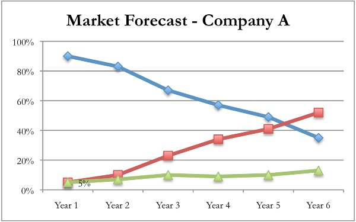
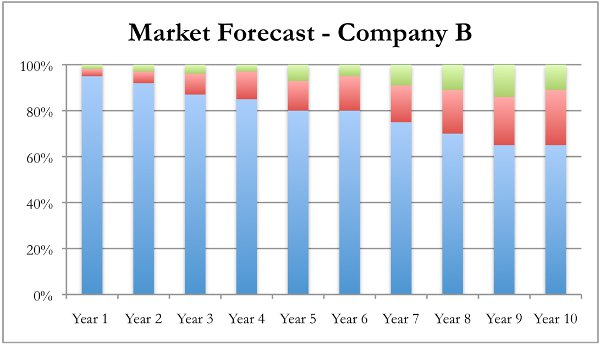
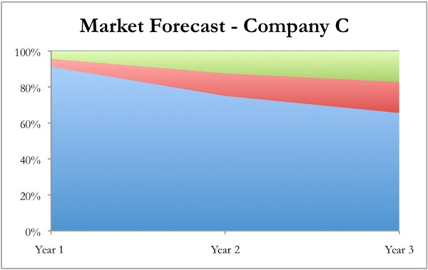

Welcome to Megapolis, a community of business opportunity and growth! With a population of 400,000, Megapolis is neither large nor small. However, being located within 20 kilometers of other medium-sized communities makes it a central location for regional trade and commerce. The city’s main industries are food and personal services firms, though there are very few goods produced locally. The city also has a handful of growing technology services firms that attract young professionals from around the region and also a small aluminum ore mining operation on the outskirts of the community. Of the food and personal services firms, there are 20 local restaurants serving various types of cuisines, 45 markets of varying sizes (including 4 large chain supermarkets), and 5 hotels. With a per capita annual income of $30,000, the residents of Megapolis have a comfortable standard of living, often visiting restaurants 3-5 times a month and frequently hosting parties for friends and family. Thanks to local tourist attractions, the hotels in the community serve large groups of foreigners every season of the year.
The local city government has become increasingly interested in developing Megapolis's tourism offerings. This development plan includes large infrastructure projects, investment and subsidy opportunities for additional restaurant and hotel businesses, and the construction of a large sports/entertainment venue within the coming ten years. Increasing Megapolis's international reputation and attracting visitors from around the world is the primary goal of the program, but secondary and tertiary goals are local SME economic development and job creation. The various elements of the plan will be fully implemented in the next ten years, with various projects being completed in a phased manner over the course of that time as the local government adjusts its budgetary priorities.
After reviewing the opportunities in your community, you have decided to open your own business. You’ve been doing some market research on the demand for locally brewed beer in your community and the broader region. You have conducted interviews with various restaurant owners and beverage distributors, reading market reports from beverage industry associations, and doing research on the internet. Based on the information you’ve gathered, you have come up with a general understanding for the beer market in your community and region. Given the number of restaurants, the average per capita income, and the diversity of competitors, you have decided to open a beer brewery.
Before making any decisions about the size and scope of your brewery, you need to understand a bit more about beer in general. Most beer is brewed using the same process and similar ingredients. The four main ingredients are water, a starch source (such as malted barley), yeast, and a flavoring source (such as hops) – the purpose of each is listed below:
The brewing process for most beers follows the same sequence of actions. The main steps of the brewing process are malting, milling, mashing, lautering, boiling, fermenting, conditioning, filtering, and packaging:
You’ve found that most people in Megapolis consume 80 liters of beer per capita on an annual basis. The population of Megapolis is 400,000, which translates into total consumer demand of 32 million liters annually for all types of beer. There are three general types of beer consumed in Megapolis: ales, lagers, and stouts. Ales account for the majority of demand. In the past five years, revenues from ales have accounted for 85-92% of the total market for beer. Using the estimated beer demand figure of 32,000,000 liters, this would result in 27.2 – 29.44 million liters of ale consumed per year. The remaining two categories – lagers and stouts – have been about equal in their share of the remainder of the market. However, you also noticed that the actual selling price (ASP) for lagers and stouts tends to be higher than ales, since both are considered a “premium” product.
While there seem to be many reasons for the popularity of ales, interviews with local restaurant and store owners have informed you that one of the reasons ales have historically been popular has been the lack of availability for other types of beer. These business owners seemed to be interested in diversifying their products, but were unsure how consumers would react. During your research, you held many conversations with friends and family about their attitudes and preferences towards to beer. Further, many of the market reports you’ve read had interesting statistics from consumer surveys and studies. One statistic noted that 90% of beer consumers were very interested in trying new types of beer. Another showed that 50% of consumers are satisfied with the current beer options in the community.
Your friends and family affirmed many of the assertions of these market reports, though they also believed that many people would strongly value beer that was produced locally, regardless of type. Given the size of the ale market, there are many different producers and there is no clear market leader, in fact, the competition is quite fragmented. Only a few breweries, on the other hand, produce lagers and stouts, and their products need to be imported to Megapolis. Overall, your brewery will be a new entrant to the market and it may be difficult to take market share away from market segments where there are many existing beer producers. Industry resources have suggested that in highly competitive markets, such as that for ale, a new entrant may never control more than 5-8% of the market. However, for burgeoning markets where a new or existing product category is growing rapidly and there are few competitors, an aggressive and savvy producer may build up a much larger share.
A number of these market reports also forecast future trends for the beer industry, including growth and market segmentation. While much of this analysis is speculative, it is the only information you have about where the beer market is headed in the next five years. While all the reports agree that there will not be much growth for the beer industry in Megapolis, the analysts have very different opinions about how the market segmentation will shift in the coming years. You found the following graphs in each of the reports:



In the charts, green represents ales, blue represents lagers, and red represents stouts. Each report has a different perspective on the direction of the beer market. It appears that lagers and stouts will grow as market categories, though each report’s rate and timeframe differ. Each report defends its conclusions and cites all the assumptions used in creating these forecasts. Since you do not currently have the time or resources to do a market study of your own, you decide to check the credibility of each report source so that you can use the most educated and unbiased data to make your decisions. You find that Company B is actually funded by the National Association of Ale Brewers, which leads you to believe that the opinion of the report might be a little skewed. Company C’s report is the most recent, but it only forecasts the market for the next three years. Company A’s report is one year older than Company C’s, but was conducted by a regional university’s marketing department to assess consumer preferences in the beer market.
The capacity for a microbrewery is typically measured in the annual capacity of liters produced. You have only found one company that sells beer-brewing equipment, but they offer a very limited selection. They have two types of equipment: one for brewing ales and one for brewing lagers. The maximum amount that can be brewed in a single batch with this equipment is 100,000 liters. Based on the differences in the brewing process, you have estimated the total time to process a single batch is different for ales and lagers: ales take 37 days and lagers take 51 days (plus one extra day for cleaning the machines after each ale and lager cycle). However, since the different steps in the brewing process use different equipment, you are able to start a new batch before the second one is fully finished. Using cycle time analysis, you figure out that an ale machine could produce 15 batches of beer annually (1,500,000 liters) and a lager machine could produce 9 batches annually (900,000 liters). Using the total demand figure for beer of 32 million liters, one ale machine’s maximum output would account for 4.7% of total beer demand, whereas one lager machine’s output would account for 2.8% of the total beer demand. However, note that ales and lagers account for vastly different shares of the beer market. In your calculations, remember that the maximum potential market share captured by an ale machine in the ale segment or a lager machine in the lager market will be quite different. The total cost for one ale-brewing machine (including all the necessary equipment) is $150,000; the total cost for a lager-brewing machine is $200,000.
You have decided to purchase somewhere between one and five brewing machines. Before you make your purchasing decision, you should think about what information you have gained from your market reports and what trends you expect in the coming years. You might not have the opportunity to purchase additional machines for 3-4 years, so it is important that you make a well-informed decision now.
Now that you have made your brewing machinery purchasing decision, you have to think about what types of packaging equipment you need to buy. Based on market reports and personal observation, you have noted that about 70% of beer consumption happens in public places such as restaurants and bars. The remaining 30% occurs privately in people’s homes. Public places, like restaurants, tend to purchase beer in the form of kegs and bottles. A keg contains 64 liters of beer per unit. A bottle contains ½ liter per unit. Stores, however, do not sell kegs; they only sell bottles and cans. A can contains 1/3 liter per unit. You have noted that different beer vendors usually sell their product in at least two of the three packaging options (kegs, bottles, and cans). Regardless of whether consumers are drinking at a restaurant or purchasing beer at a store, there seems to be a fairly even split between the packaging options available.
The same vendor that sold you the brewing machinery has the necessary equipment for each of the three packaging options. The keg-packaging equipment costs $30,000, but the equipment for both bottle and can packaging costs $40,000 for either option. You need to decide what packaging options to invest in.
Now that you know how much machinery you are purchasing, you can decide what size warehouse you will need for producing your beer. You found one nice location in an industrial part of town. The total available space is more than enough to accommodate any beer brewery, but the landlord has agreed to rent you only as much space as you need if you sign a 10-year lease. You decide this is a great option because it allows you additional space to grow if you purchase more brewing equipment in the future. The owner of the property has some experience with brewing and has given you information on how much space you will need. In order to calculate the total number of square footage necessary, he has broken down your operation into four aspects: general office space, storage of raw materials (the ingredients for your beer), floor-space for brewing, and storage of finished goods (packaged kegs, bottles, and cans ready for sale). The price per square foot is $5.00. This price will be adjusted annually for inflation.
You and the landlord have estimated that you will need 1,000 square feet for office space. For storage of raw materials, the landlord tells you that your storage space will depend on how many liters of beer you could potentially produce with the machines you purchased. The more you can produce, the more space you will need to store ingredients. In terms of floor space, the equipment vendor said that you would need 1,750 square foot for every brewing machine purchased. This will be enough for the brewing and packaging of the beer. The landlord and you agree on this point.
The last decision for your warehouse will be how much space you need for storing finished goods. You and the landlord cannot agree on a specific amount, so you decide to look at how much space your competitors typically use. Much like the logic for how much storage space is needed for raw materials, this calculation will depend on how much beer you could potentially produce. However, the space needed will also depend on how quickly you can sell and distribute your beer after it has been packaged. By reviewing the financial statements of other breweries, you decide that the best way to come up with a decision is to compare the Finished Goods Inventory on their balance sheets to their production levels. You find that it can range from 2-10%, but that most breweries have 5-8% storage capacity. You need to decide what percentage of your maximum potential production you will use to set the rental fee for this aspect of your brewery. You do not want to have too little space, because you might have to stop production if you there is not enough space to store your goods. On the other hand, if you have too much space you will be paying for floor space you don’t need.
Now that you have decided how much you are investing in machinery and estimated your annual rental cost, you should start thinking about how much financial capital you will need to get your brewery started.
In addition to the capital investment and rental expense, there are other costs and factors to consider. First, you should consider that most new businesses do not make a financial profit for the first few years of operation. In other words, your business will probably be cash flow negative in the near future. Second, there are additional costs that your business will incur. During the next year, you will be focused on constructing the brewery and ensuring that all the machinery is functional. You have determined that you can do all of this work yourself, so your salary will be the only expense during the first year. You do not expect to produce or sell any beer in the first year. However, you will begin production next year, which will require you to build up a full-time staff as your production volume grows. There are also other expenses that will be minimal in the first year, but will grow as time passes and you begin production. These include utilities (gas, electricity, water, phone, internet), fuel expense (for distributing the finished beer to your customers), marketing expense, product development expense, promotional activities expenses, and community development expense. You also plan to invest $50,000 this year in general office equipment such as computers and furniture.Now you must decide how much and what mix of debt and equity financing you will pursue to fund your brewery until you begin making a profit. You have spoken to your local bank about debt financing options. The bank has agreed to let you borrow up to $2,000,000 in the form of a long-term loan. However, the amount borrowed will affect the interest rate and how quickly you must pay back the loan. As the amount increases, the bank assumes more risk that you and your business might not be able to pay back the loan. The interest rate for your long-term loan may range anywhere from 8-14%, depending on the amount you decide to borrow. Additionally, since you have significant ties to the community and personal assets to serve as collateral, the bank has agreed to supply you with a line of credit. This line of credit has much higher interest rates (up to 22%) so you decide that this will be your emergency source of funding in the event that you run out of money from other sources.
In addition to these debt options, you have gathered the financial support of your friends and family. Along with your personal savings, you have been able to gather commitments to invest up to $1,500,000 in your business. While there is no interest expense for this type of equity financing, you give up some control of your business by having many investors. Investors expect to have a vote in the direction of your business since it was their money that helped start it. Since these investors are mostly close friends and family, you don’t expect there to be too much trouble but it is something you should be aware of.
First, you need to estimate your total financing need. It is always nice to have extra cash around, but there can also be problems with raising too much capital for a new business. If you take on too much debt, you will be paying more interest expense than you need to. If you take on too much equity, you might have people trying to manage your business or take it in a different strategic direction. However, no business can succeed without financial resources, so you also want to make sure you have enough cash to get you through the next few years until you will hopefully be making a financial profit.
After you have figured out how much cash you need, the next step is think about what mix of debt and equity you are going to use. You decide to analyze the financial statements of other breweries to see what their financing strategy has been. By looking at their balance sheets, you can see how much debt financing each brewery has compared to how much equity financing they have used. Using the relationship of debt financing to equity financing in the most recent year, you find that, on average, most brewers have about $0.50 of debt financing for every $1.00 of equity financing. For each brewery you analyzed, you also decide to look at their financial records for the last five years to see if this same ratio was followed. You have found that for every $1.00 of equity capital, other breweries have had anywhere from $0.30 - $0.80 of debt financing. While there seems to be some variability, looking at the trends of your competitors helps give you an idea of what financing strategy you should use for your brewery. You decide that you should use a mix of debt and equity capital to fund your brewery, but need to decide how much of each is the appropriate amount.